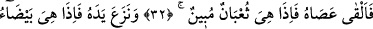
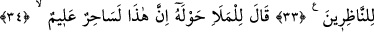
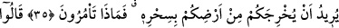
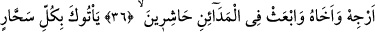
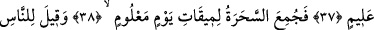
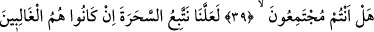
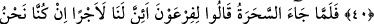
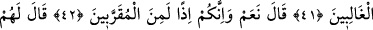
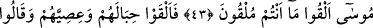
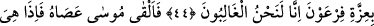
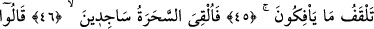
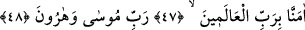
MÛSA VE SİHİRBAZLAR
32. Bunun üzerine Musa asâsını atıverdi; bir de ne görsünler, asâ apaçık koca bir
yılan (oluvermiş)!
33. Elini de (koynundan) çıkardı; o da seyredenlere bembeyaz görünen (nur
saçan bir şey oluvermiş)!
34. Fir’avn, çevresindeki ileri gelenlere: “Bu, doğrusu çok bilgili bir sihirbaz!”
dedi.
35. Sizi sihiriyle yurdunuzdan çıkarmak istiyor. Şimdi ne buyurursunuz?
36. Dediler ki: “Onu ve kardeşini eğle ve şehirlere toplayıcı görevliler gönder;
37. Ne kadar bilgisi derin sihirbaz varsa sana getirsinler.”
38. Böylece sihirbazlar belli bir günün tayin edilen vaktinde biraraya getirildi.
39. Halka: Siz de toplanıyor musunuz (haydi hemen toplanın), denildi.
40. (Fir’avn’un adamları:) Eğer üstün gelirlerse, herhalde sihirbazlara uyarız,
dediler.
41. Sihirbazlar geldiklerinde Fir’avn’a: “Şâyet biz üstün gelirsek, muhakkak bize
bir ücret vardır değil mi?” dediler.
42. Fir’avn cevap verdi: “Evet, o takdirde hiç şüphe etmeyin, gözde kimselerden
de olacaksınız.”
43. Musa onlara: “Ne atacaksanız atın!” dedi.